Catalog
La sezione Catalog ha tre importanti funzionalità:
-
Mostrare l’elenco degli asset installabili recuperati dai provider con i relativi prezzi e regioni associabili.
-
Dare la possibilità all’amministratore del tenant di definire gli item utilizzabili successivamente per il provisioning.
-
Dare la possibilità all’amministratore del tenant di definire gli item utilizzabili successivamente all’ interno delle simulazioni del modulo What If.
I prezzi recuperati, oltre a essere visibili all’interno del dettaglio dell’asset, vengono utilizzati per gli scenari What If e il calcolo dei costi.
Per accedere alla funzionalità di Catalog, in alto a sinistra cliccare sul pulsante bento.
Dopodiché, cliccare su “Catalog” (Figura 133).
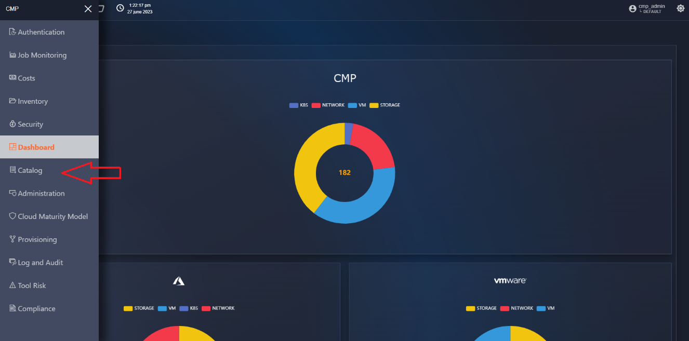
Figura 133 - Accesso a Catalog
A questo punto, l’utente si ritrova all’interno della pagina del tab “Resources” (Figura 134).
Possiamo suddividere la funzionalità in 3 sezioni per specificarne il comportamento:
- Elementi di catalogo SCMP ( riquadro giallo nell’ immagine)
- Elementi di catalogo dei Providers (riquadro verde nell’ immagine)
- Servizi e blueprint di catalogo SCMP (riquadro rosso nell’ immagine)
Di seguito analizzeremo ogni gruppo di funzionalità separatamente.
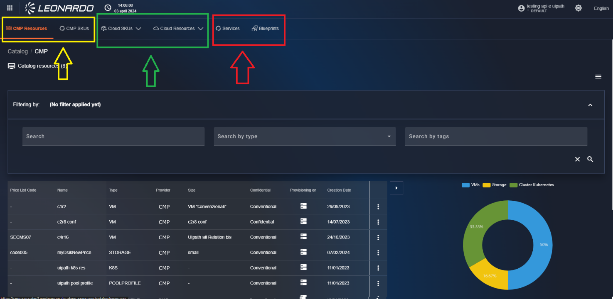
Figura 134 - Catalogo della SCMP
Gestione Elementi di catalogo SCMP
All’interno della pagina sono presenti una serie di filtri che una volta selezionati e cliccando sul pulsante che raffigura una lente d’ingrandimento verranno utilizzati per filtrare la lista dei risultati (Figura 135)
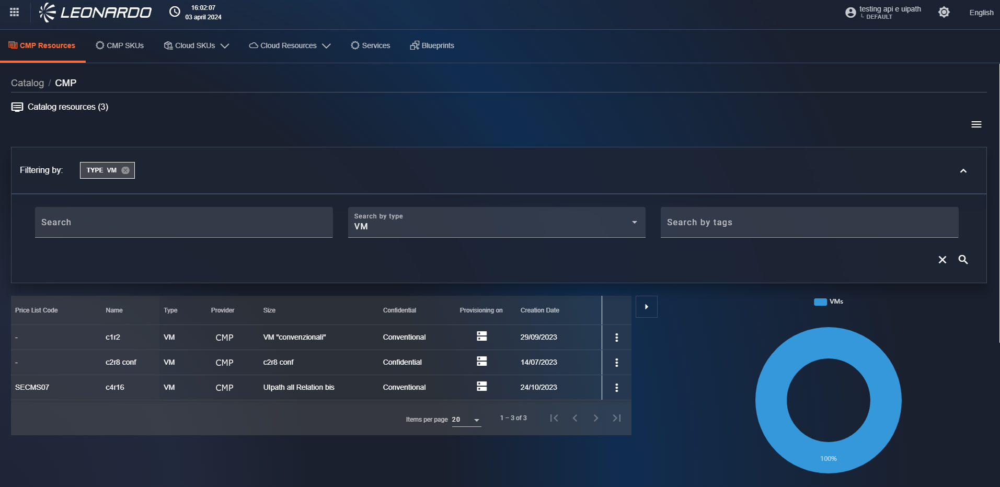
Figura - Catalogo SCMP filtrato
Accanto al pulsante che raffigura una lente d’ingrandimento, è presente il pulsante che raffigura una “X” per effettuare il reset dei filtri e della tabella delle risorse.
Sotto il filtro di ricerca, è presente il filtro di ricerca per tag.
Cliccare su di esso e selezionare un tag, a questo punto la tabella restituisce le risorse associate con il tag selezionato dall’utente.
Risorse e relazioni tra risorse
All’ interno della SCMP è possibile configurare una risorsa di tipo “Relazione”, questa relazione consente di mappare le macchine dei vari provider per modificarne i costi e permetterne l’utilizzo nelle altre funzionalità.
Per accedere alla pagina delle relazioni cliccare il tab “SCMP Resources” in alto nella funzionalità di Catalogo.(Figura 136)
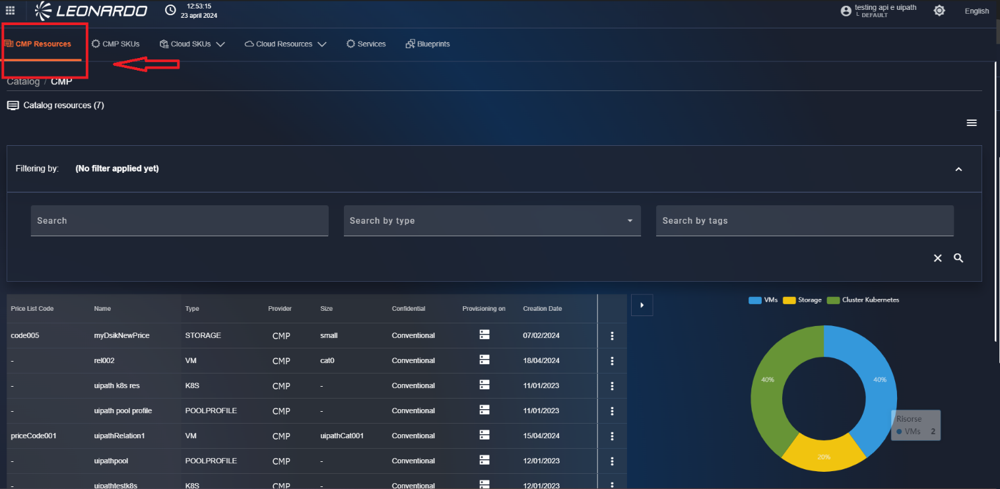
Figura - Accesso a "SCMP resources"
In alto è presente una sezione filtri che permette la ricerca per:
-
“Search” : permette di inserire un testo libero per la ricerca
-
“Search By tags” : permette di cercare tramite i tag associati alle risorse
-
“Search by Service name”: permette la ricerca tramite nome del servizio.
Export delle risorse
Per esportare l’elenco delle risorse del Catalogo presenti all’interno della lista, all’interno della pagina in alto a destra cliccare sull'hamburger menu, e poi cliccare su “Export” (Figura 137).
L’operatore avrà la possibilità di esportare la lista dei risultati in formato .csv e/o .json.
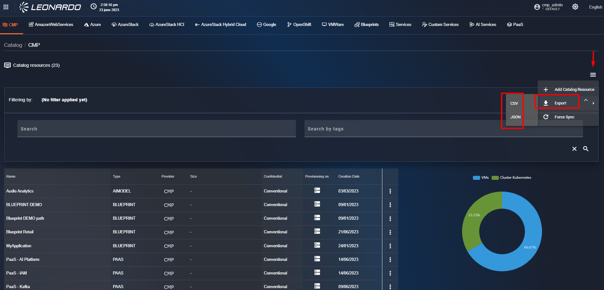
Figura 137 – Scaricare la lista di risultati
Funzionalità Aggiornamento Forzato del Catalogo
Attraverso la funzionalità di Force Sync, è possibile richiedere un aggiornamento del catalogo cliccando sull’hamburger menù e successivamente cliccando su “Force Sync”(Figura 138)
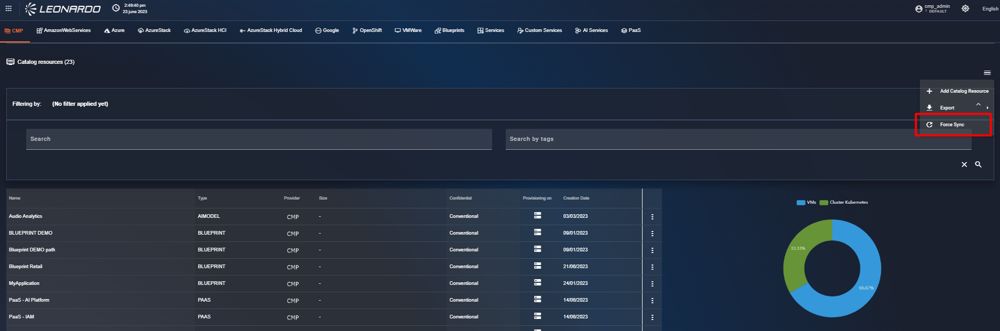
Figura 138 – Funzionalità Force Sync
Creazione relazione di Catalogo
Per creare una risorsa sul Catalogo, sempre all’interno della pagina in alto a destra cliccare sull'hamburger menu, e poi cliccare su “Add Catalog Resource” (Figura 139).
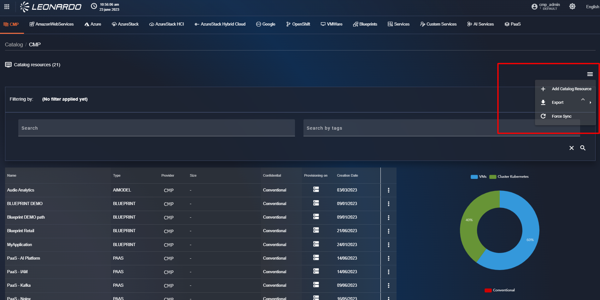
Figura 139 - Opzione per aggiungere una risorsa
A questo punto, l’utente si ritrova all’interno della pagina in cui è possibile selezionare il tipo di risorsa da creare (Figura 140).
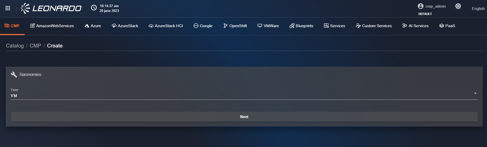
Figura 140 - Selezione del tipo di risorsa da creare
Dal menu a tendina, selezionare il tipo di risorsa da creare. Dopodiché, cliccare sul pulsante “Next”. Ci si ritrova all’interno della pagina di compilazione della risorsa (Figura 141).
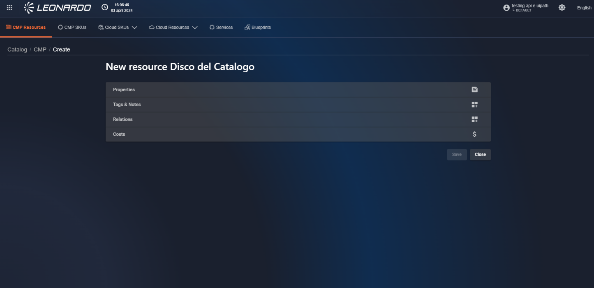
Figura 141 – Esempio di form per la creazione di una relazione
I singoli parametri da inserire nella sezione “Properties” venogno specificati nella tabella:
Vengono indicati con * i parametri obbligatori
| Nome | Tipo | Descrizione | esempio |
|---|---|---|---|
| cateogry | string | Inserire la categoria di appartenenza della risorsa | CAT0004BT |
| Price list code | string | Inserire il codice identificativo del listino prezzi dal quale vengono ricavate le associazioni | PRC005DE |
| confidential | boolen | Se abilitato indica che la risorsa è di tipo confidenziale | false |
| description | string | Inserire una descrizione libera della risorsa | Low end machine |
| Name* | string | Inserire il nome della risorsa | 8Core16GB- small |
| RAM(GIB)* | integer | Inserisci qui il la quantità in GiB utilizzate dalle macchine inserite nella relazione | 16 |
| VCPU* | integer | Inserisci qui il numero di vCPU utilizzate dalle macchine inserite nella relazione | 8 |
Tabella 26 – Campi specifici relazione VM
All’interno della pagina di creazione della risorsa (Figura 142), compilare tutti i campi della sezione “Properties”. Dopo aver fatto ciò, selezionare uno o più tag per il campo “Add SCMP tag…” e compilare delle note all’interno della sezione “Tags & Note”
. 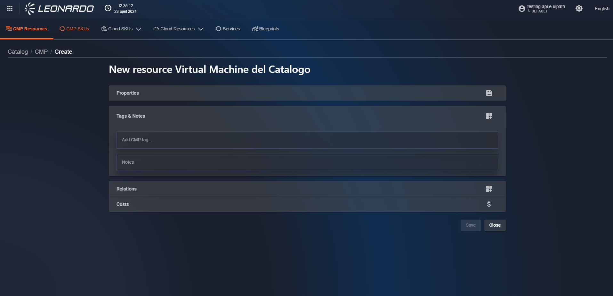
Figura - Sezione tag e note
All’interno della sezione “Relations”, aprire la sezione a sinistra (Figura 141), successivamente è possibile utilizzare i filtri “search” con testo libero o selezionare un “System Type” tra quelli disponibili per filtrare la tabella delle risorse
Una volta individuata la risorsa da associare portare , utilizzando il drag and drop, la risorsa dalla parte destra della pagina alla parte sinistra.
È possibile aggiungere una sola risorsa per tipologia di provider, se l’utente prova a inserire un'altra risorsa dello stesso provider apparirà un pop up che invita l’utente ad aggiungere una sola risorsa per provider.
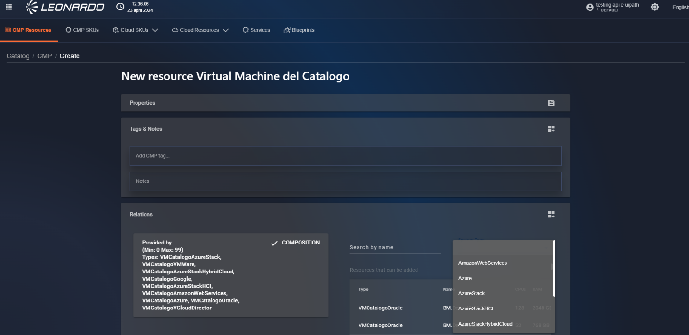
Figura 143 - Selezione del provider per associare le risorse
Possiamo effettuare una associazione “singola” inserendo in questa sezione una sola macchina, in questo modo il sistema ci permette di selezionare manualmente, nella sezione “Cost” in basso (Figura 144), un prezzo personalizzato da associare alla risorsa. Per farlo bisogna selezionare l’ intervallo di fatturazione (orario, giornaliero, settimanale, mensile) e inserire a destra il costo relativo al periodo selezionato.
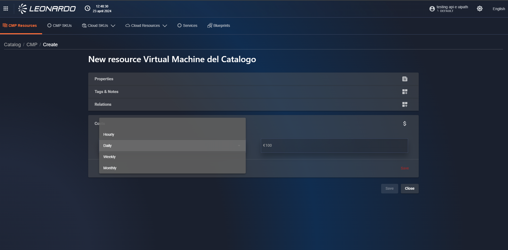
Figura - Sezione costi delle relazioni
Selezionando più di una macchina per provider, la sezione costi viene nascosta automaticamente, i costi applicati saranno definiti dalle percentuali configurate nei sottosistemi. (Figura 145).
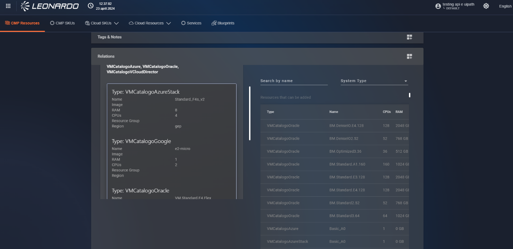
Figura 145 - Risorse associate alla risorsa SCMP
Una volta inserite le risorse in relazione, nella sezione ‘Relations Chart’ si creerà automaticamente un diagramma illustrativo (Figura 146).
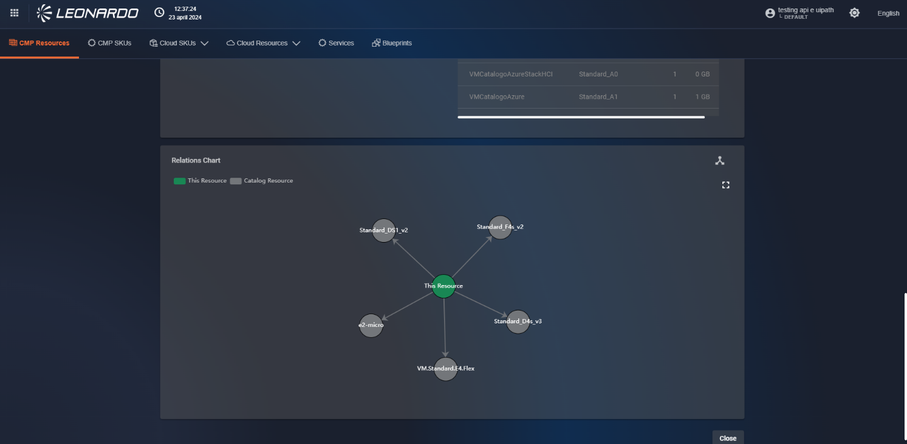
Figura 146 – Creazione automatica del Relation Chart
Infine, in basso a destra, cliccare sul pulsante “Save” per salvare le modifiche. Apparirà un banner in basso che avvisa l’utente dell’avvenuta creazione della risorsa, e viene reindirizzato nella pagina contenente la lista di risorse.
Utilizzo della tabella di Catalogo
Visualizzazione riepilogo Risorsa
Per visualizzare i dati di una risorsa di SCMP, nella pagina “Resources” di Catalog, nella lista delle risorse, in corrispondenza di una risorsa cliccare sul record di interesse, apparirà una finestra che riporta piccole informazioni della risorsa individuata: Sistema, Nome, Taglia , Data aggiornamento , RAM e CPU come presente nell’immagine seguente (Figura 147).
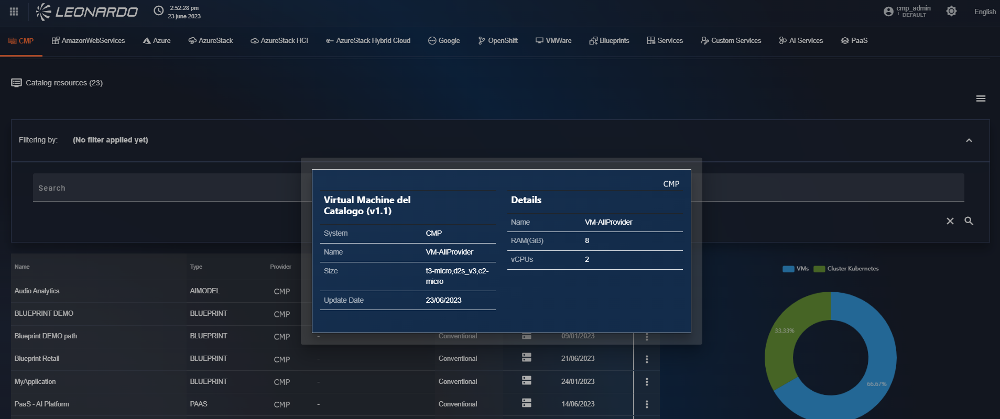
Figura 147 – Dettaglio rapido delle risorse di catalogo
Visualizzazione delle relazioni di Catalogo
Per visualizzare i dati di una risorsa di SCMP, nella pagina “Resources” di Catalog, nella lista delle risorse, in corrispondenza di una risorsa cliccare sul kebab menu e poi cliccare su “Show” (Figura 148).
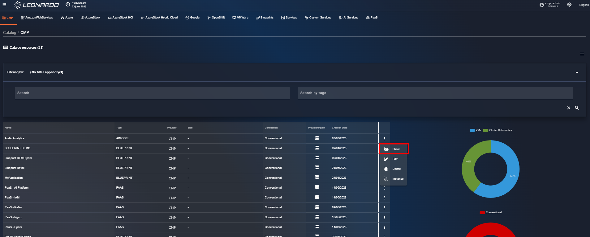
Figura 148 - Accesso alla risorsa in modalità view
Dopo aver fatto ciò, l’utente si ritrova all’interno della pagina della risorsa in modalità view, nel quale potrà visualizzare i dati ma non potrà modificarli (Figura 149).
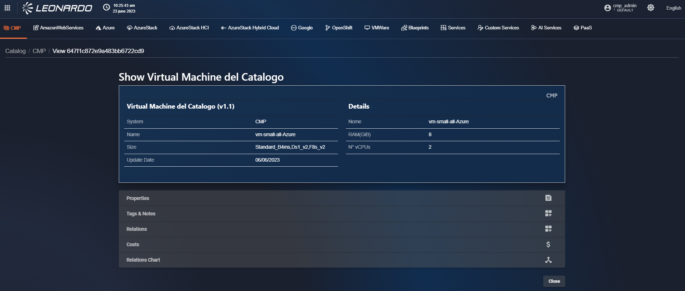
Figura 149 - Dettaglio completo delle risorse di catalogo
Il dettaglio di una risorsa è suddiviso in varie sezioni:
- Details.
- Properties (Figura 150).
- Tags & Notes (Figura 151).
- Relations: (Figura 152).
- Cost, se presente
- Relations Chart ().
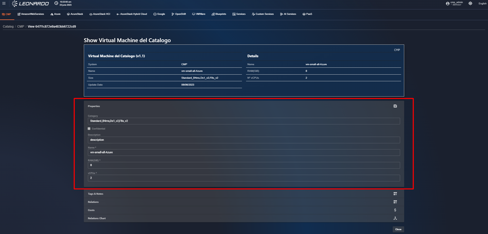
Figura 150 - Sezione proprietà degli elementi del catalogo
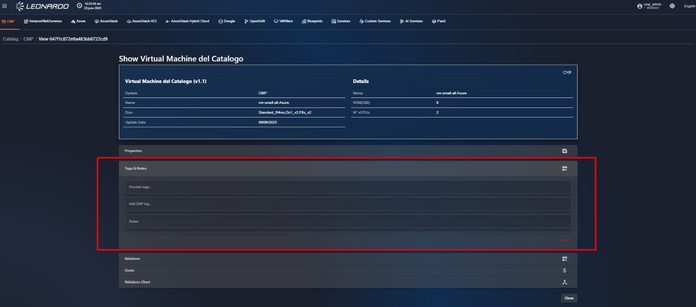
Figura 151 - Sezione Tags & Note degli elementi del catalogo
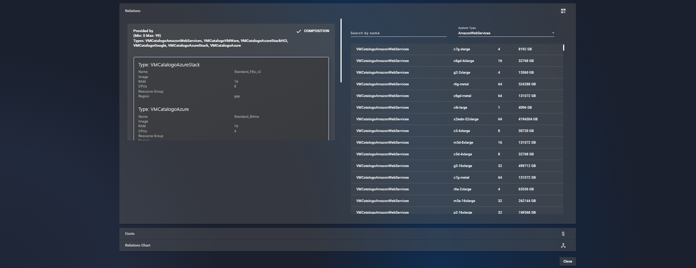
Figura 152 - Sezione delle relazioni del catalogo SCMP
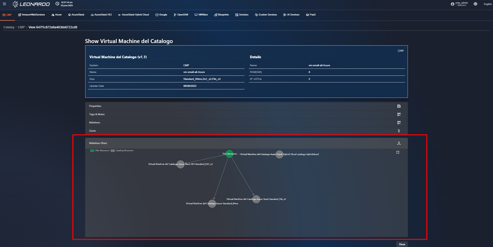
Figura 153 - Sezione Relations Chart delle risorse
In basso a destra, cliccare sul pulsante “Close”. L’utente verrà reindirizzato nella pagina “Resources” di Catalog.
Modifica delle relazioni di Catalogo
Per modificare una risorsa di SCMP, nella pagina “Resources” di Catalog, nella lista delle risorse, in corrispondenza di una risorsa cliccare sul kebab menu e poi cliccare su “Edit” (Figura 154).
Figura 154 - Accesso alla risorsa in modalità edit
Dopo aver fatto ciò, l’utente si ritrova all’interno della pagina della risorsa in modalità edit, a differenza della modalità ‘Show’ in quella ‘Edit’ è possibile modificare la sezione Properties e la sezione Cost (Figura 155).
In basso a destra, cliccare sul pulsante “Save”. A questo punto, in basso apparirà un banner che avvisa l’utente dell’avvenuto aggiornamento della risorsa.
Inoltre, l’utente verrà reindirizzato nella pagina “Resources” di Catalog.
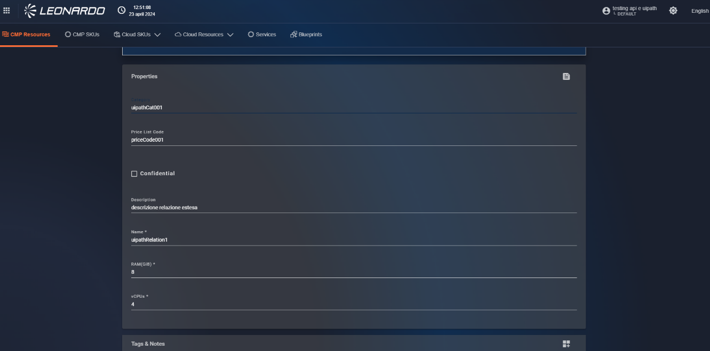
Figura 155 - Modifica della relazione
Eliminazione delle relazioni di Catalogo
Per eliminare una risorsa di SCMP, nella pagina “Resources” di Catalog, nella lista delle risorse, in corrispondenza di una risorsa cliccare sul kebab menu e poi cliccare su “Delete” (Figura 156). Fatto ciò, appare una modale in cui è necessario cliccare sul pulsante “Remove” per confermare l’eliminazione della risorsa (Figura 157).
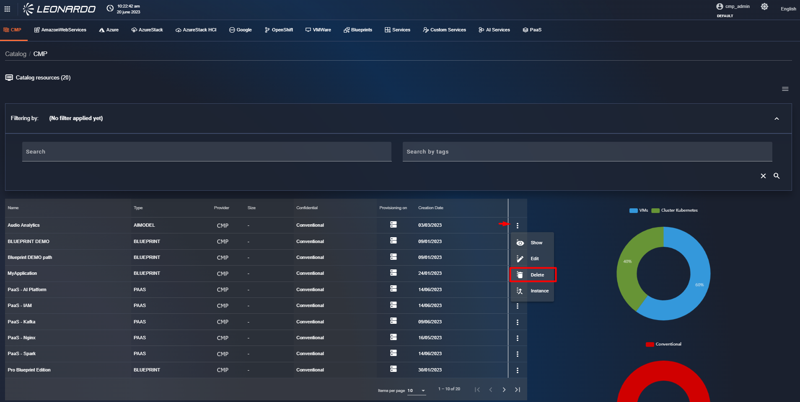
Figura 156 - Eliminazione di una risorsa
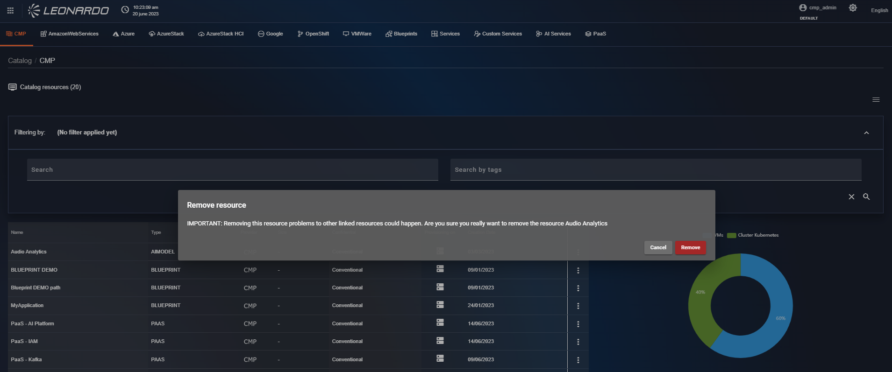
Figura 157 - Conferma eliminazione della risorsa
Risorse e relazioni tra SKU
All’ interno della SCMP è possibile configurare una risorsa di tipo “SKU SCMP”, questa relazione consente di mappare gli sku ricevuti dai provider per poterne definire i costi e l’unità di misura visualizzata nel sistema.
Per accedere alla pagina degli SKU cliccare il tab “SCMP SKU” in alto nella funzionalità di Catalogo.(Figura 158)
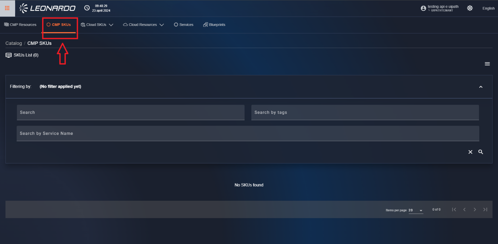
Figura - Accesso a "SCMP SKU"
In alto è presente una sezione filtri che permette la ricerca per:
-
“Search” : permette di inserire un testo libero per la ricerca
-
“Search By tags” : permette di cercare tramite i tag associati alle risorse
-
“Search by Service name”: permette la ricerca tramite nome del servizio.
Export delle risorse
Per esportare l’elenco delle risorse del Catalogo presenti all’interno della lista, sempre all’interno della pagina del tab “SCMP” in alto a destra cliccare sull'hamburger menu, e poi cliccare su “Export” (Figura 159).
L’operatore avrà la possibilità di esportare la lista dei risultati in formato .csv e/o .json.
Figura 159 – Scaricare la lista di risultati
Creazione relazione di Catalogo SKU
Per creare una risorsa sul Catalogo, sempre all’interno della pagina del tab “SCMP”, in alto a destra cliccare sull'hamburger menu, e poi cliccare su “Add Catalog Resource” (Figura 160).
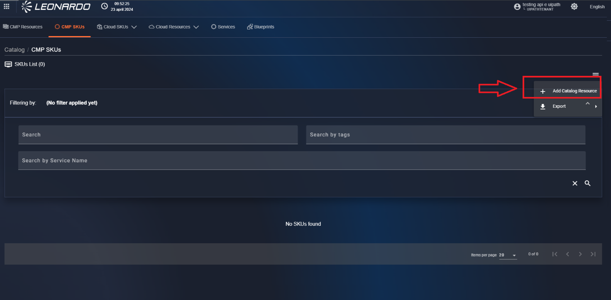
Figura 160 - Opzione per aggiungere una risorsa “SKU”
A questo punto, l’utente si ritrova all’interno della pagina di creazione di una risorsa ”SKU”,cliccare sugli accordion presenti in pagina per visualizzarne i dettagli (Figura 161).
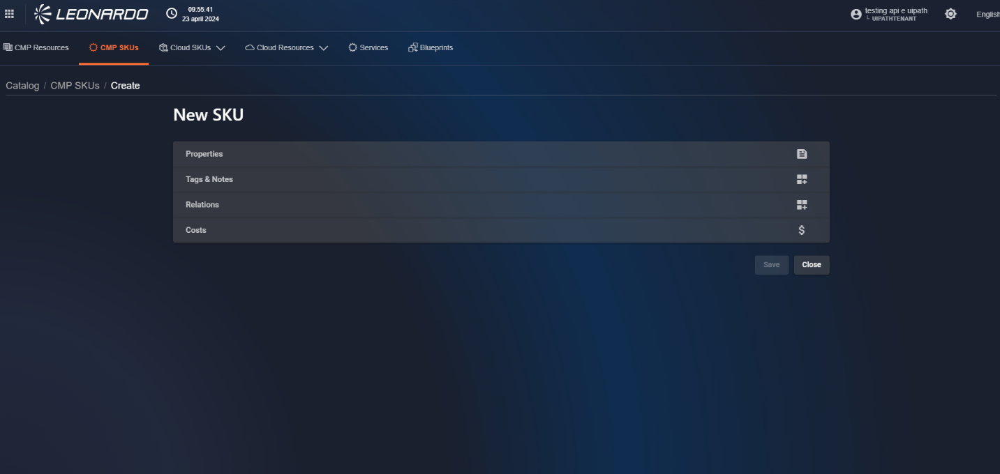
Figura 161 – Pagina di creazione “SKU”
Nella sezione “Properties” (Figura 162) compilare tutti i campi definiti nella tabella:
Vengono indicati con * i parametri obbligatori
[TABLE]
Tabella 27 – Campi “Properties” specifici SKU
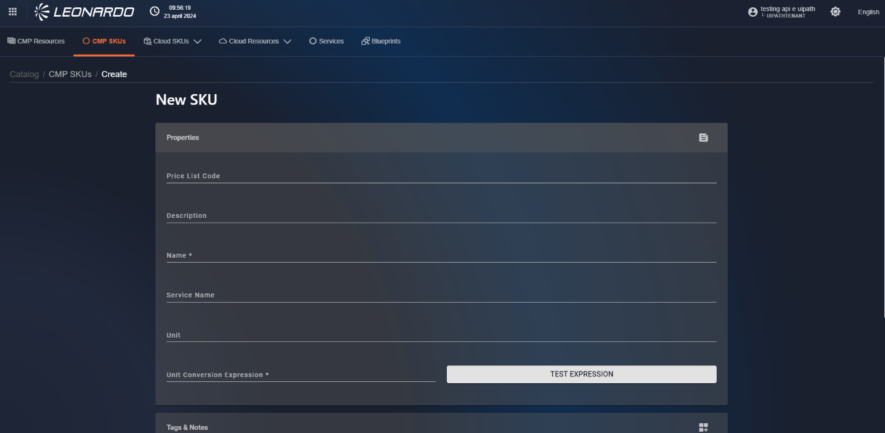
Figura 162 - Compilazione dei campi, selezione Properties
Dopo aver inserito la formula di conversione è necessario cliccare sul pulsante “Test expression” per verificarne la correttezza.
Se è stata inserita correttamente il pulsante diventerà di colore “Verde” con scritto “TEST OK” , (Figura 163) in caso contrario diventerà di colore “Rosso” “KO”, in questo caso la possibilità di salvare la relazione viene inibita.
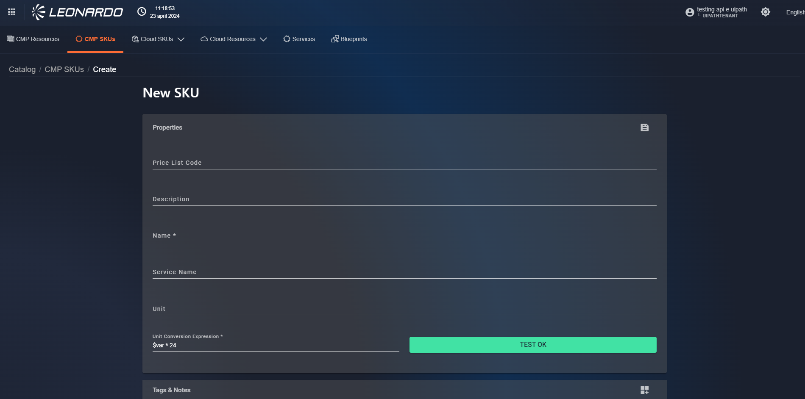
Figura - conferma della formula di conversione
Successivamente, selezionare uno o più tag per il campo “Add SCMP tag…” e compilare delle note all’interno della sezione “Tags & Note”.
Nella sezione “Relation” è possibile selezionare uno o più SKU provienienti dai vari cataloghi dei provider, per relazionarli tra loro e unificarne i costi, per farlo cliccare nella sezione “Composition” sulla sinistra, verrà aperta una sezione scura dove , tramite la tecnica del drag and drop (Figura 164) possiamo spostare gli SKU disponibili nella sezione destra .
Nella sezione destra è possibile utilizzare i filtri per visualizzare solo i risultati pertinenti, i filtri disponibili sono , il provider d’ origine , il nome del servizio e un campo di testo libero (in giallo nell’ immagine)
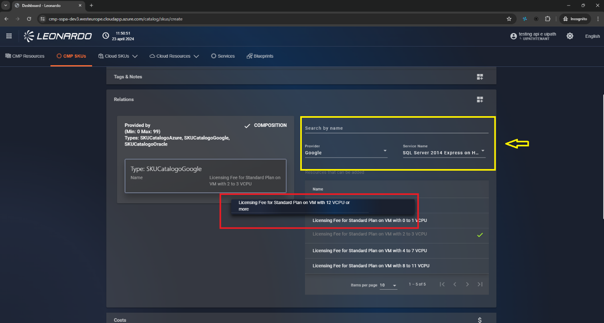
Figura - Drag and drop Relazioni SKU
Una volta inserite le risorse in relazione, nella sezione ‘Relations Chart’ si creerà automaticamente un diagramma illustrativo (Figura 165).
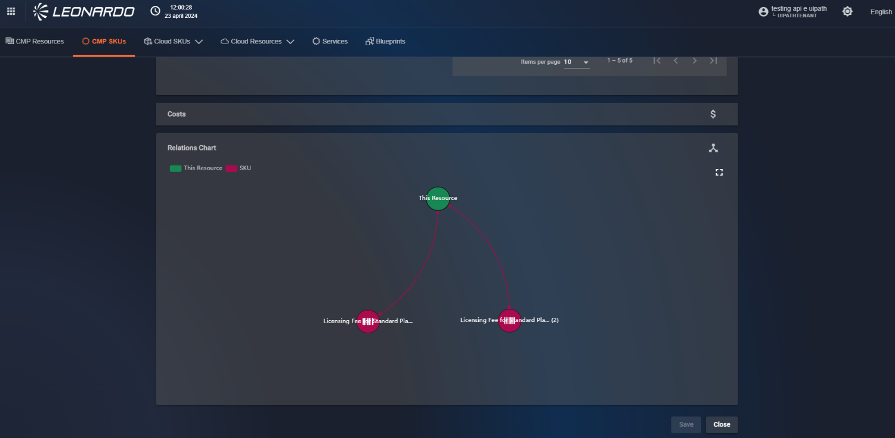
Figura 165 – Creazione automatica del Relation Chart
Infine, cliccare il pulsante salva per confermare la creazione della relazione SKU, al termine si torna nella pagina contenente la lista di relazioni SKU dove potremo trovare all’ interno della lista la nuova relazione.
Utilizzo della tabella di Catalogo
Visualizzazione riepilogo Risorsa
Per visualizzare i dati di una risorsa SKU, nella lista delle risorse, in corrispondenza di una risorsa cliccare sul record di interesse, apparirà una checkbox che riporta piccole informazioni della risorsa individuata: Sistema, Nome, Taglia , Data aggiornamento , nome e servizio come presente nell’immagine seguente (Figura 166).
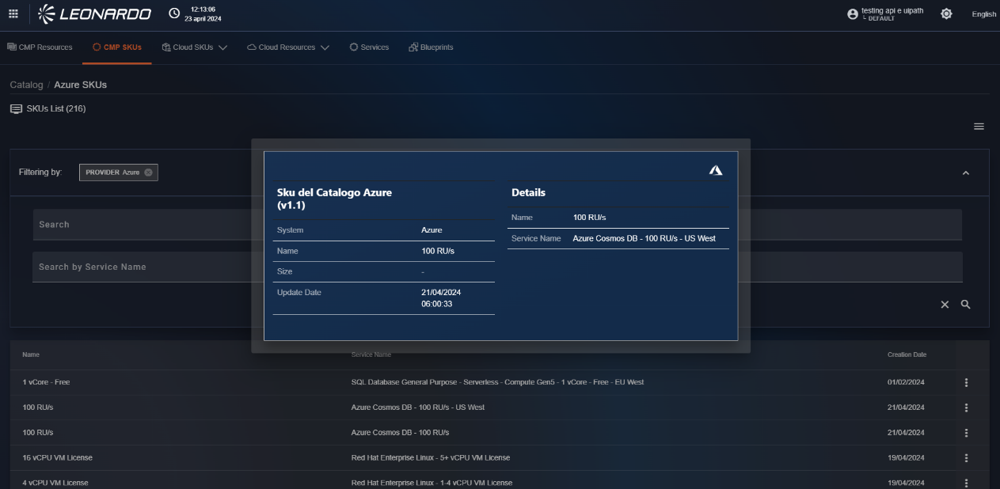
Figura 166 – Dettaglio rapido delle risorse SKU
Visualizzazione delle relazioni di Catalogo
Per visualizzare i dati di una risorsa SKU , nella lista delle risorse, in corrispondenza di una risorsa cliccare sul kebab menu e poi cliccare su “Show” (Figura 167).
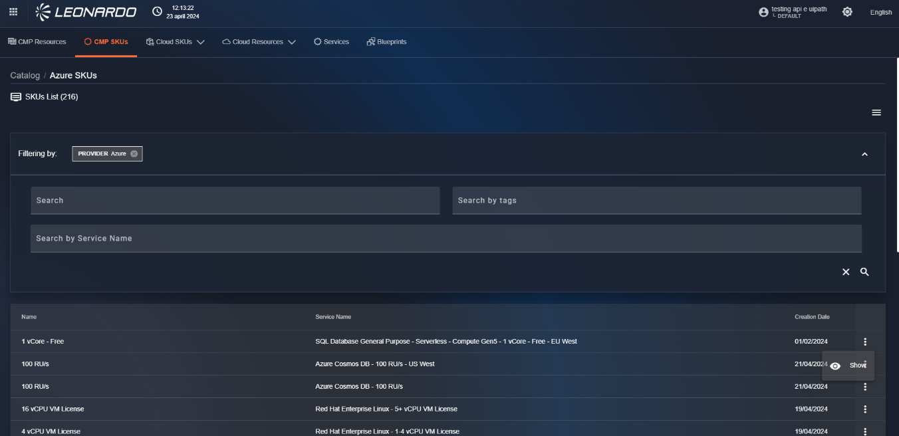
Figura 167 - Accesso alla risorsa in modalità view
Dopo aver fatto ciò, l’utente si ritrova all’interno della pagina della risorsa in modalità view, nel quale potrà visualizzare i dati ma non potrà modificarli (Figura 168).
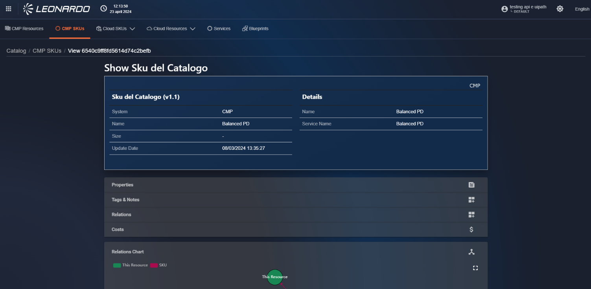
Figura 168 - Dettaglio completo delle risorse di catalogo
Il dettaglio di una risorsa è suddiviso in varie sezioni:
- Details.
- Properties (Figura 169).
- Tags & Notes : ove nel campo “Provider Tags…” non è possibile selezionare un tag, in quanto si ottiene automaticamente dal sottosistema a cui appartiene; il campo “Add SCMP Tag…” permette di selezionare dei tag da un elenco o inserirne uno manualmente; nel campo Notes è possibile inserire una nota testuale (Figura 170).
- Relations: ove presenti gli sku di provider in relazione (Figura 171).
- Cost.
- Relations Chart (Figura 172).
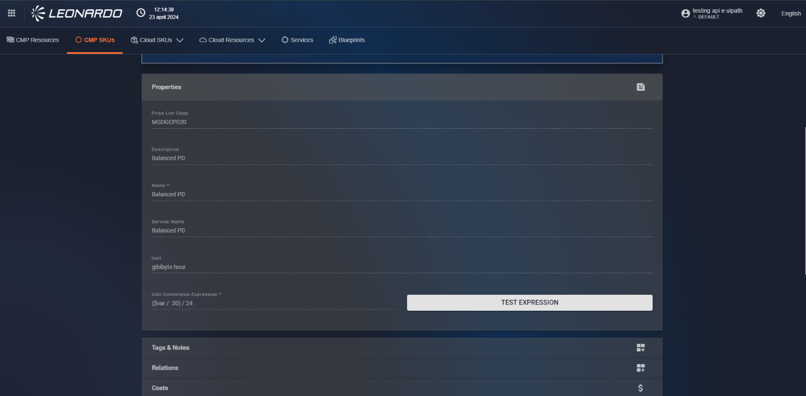
Figura 169 - Sezione proprietà degli elementi SKU di catalogo
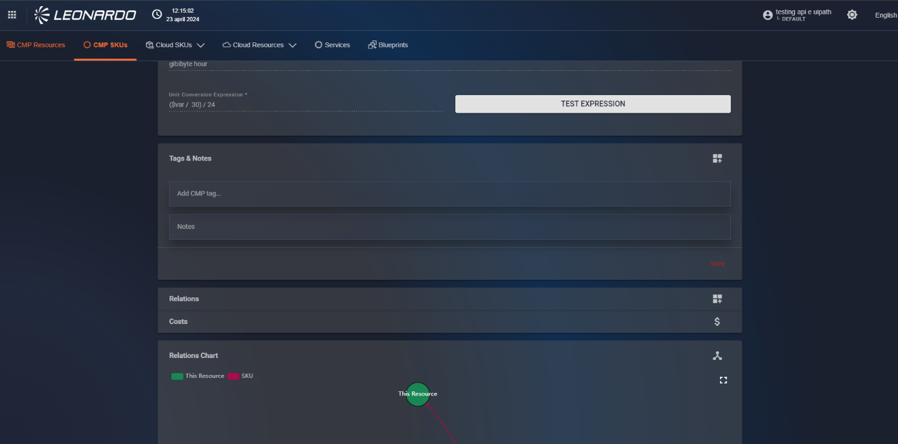
Figura 170 - Sezione Tags & Note degli elementi SKU di catalogo
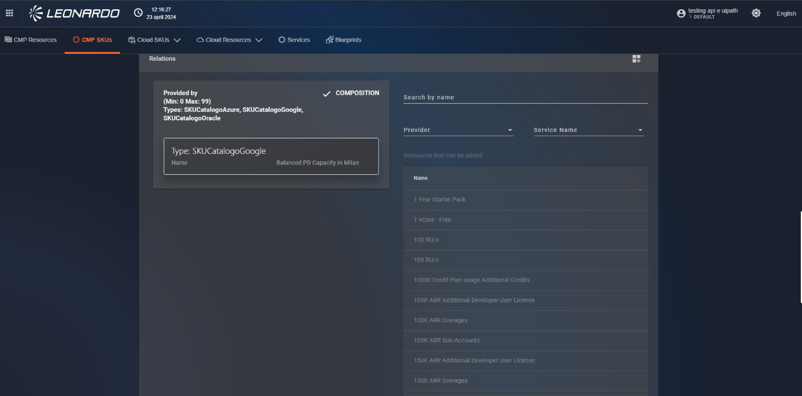
Figura 171 - Sezione delle relazioni degli SKU di catalogo
Figura 172 - Sezione Relations Chart delle risorse
In basso a destra, cliccare sul pulsante “Close”. L’utente verrà reindirizzato nella pagina contenente la lista delle risorse
Modifica delle relazioni di Catalogo
Per modificare una risorsa di SCMP, nella pagina “Resources” di Catalog, nella lista delle risorse, in corrispondenza di una risorsa cliccare sul kebab menu e poi cliccare su “Edit” (Figura 173).
Figura 173 - Accesso alla risorsa in modalità edit
Dopo aver fatto ciò, l’utente si ritrova all’interno della pagina della risorsa in modalità edit, a differenza della modalità ‘Show’ in quella ‘Edit’ è possibile modificare i parametri delle risorse
Eliminazione delle relazioni SKU di Catalogo
Per eliminare una risorsa SKU di catalogo, nella lista delle risorse, in corrispondenza di una risorsa cliccare sul kebab menu e poi cliccare su “Delete” (Figura 174). Fatto ciò, appare una modale in cui è necessario cliccare sul pulsante “Remove” per confermare l’eliminazione della risorsa (Figura 175).
Figura 174 - Eliminazione di una risorsa SKU
Figura 175 - Conferma eliminazione della risorsa
Importazione pianificata di elementi di catalogo
L’inserimento manuale delle risorse di catalogo è un’operazione molto lunga e onerosa, per semplificare viene data la possibilità all’ utente di inserire un file “Excel” contenente i dati che verranno poi importati automaticamente nel giorno indicato come “Inizio validità”
Nuova importazione
Per inserire un nuovo listino è necessario cliccare l’ “hamburgher menu” disponibile in alto a destra nella pagina delle risorse di catalogo e selezionare la voce “Import Catalogue”(Figura 176)
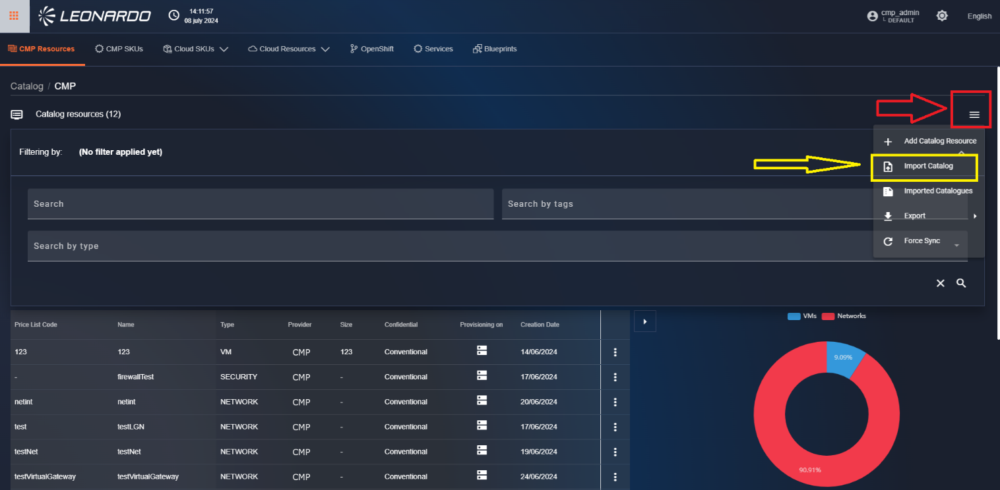
Figura - Accesso all "Importazione pianificata del catalogo"
Dopo aver cliccato il pulsante, verrà aperta una modale, contenente due pulsanti():
-
“Resources” : cliccando il pulsante indichiamo al sistema che il listino inserito conterrà delle risorse
-
“SKUs” cliccando il pulsante indichiamo al sistema che il listino inserito conterra elementi SKU
Una volta selezionata la tipologia di risorsa da creare la pagina si aggiorna per mostrare tutti i parametri obbligatori (Figura 177)
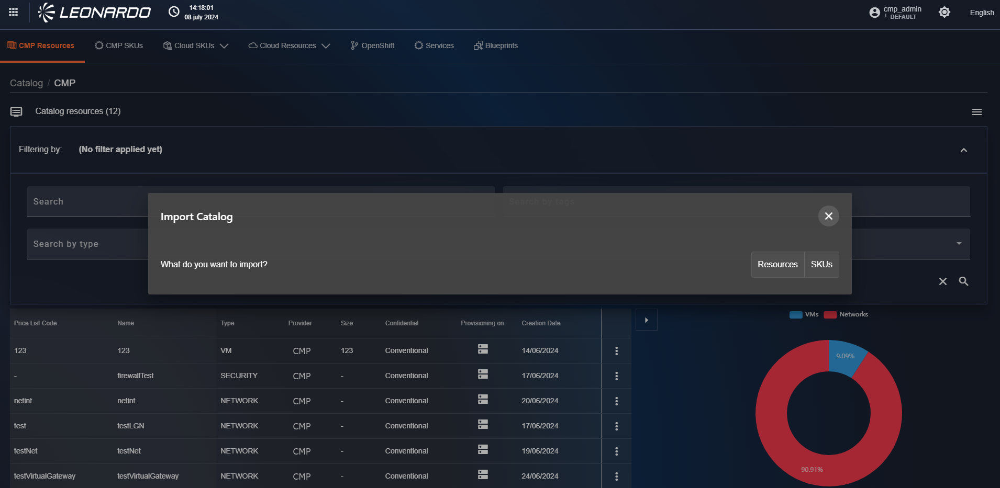
Figura -Scelta della tipologia di catalogo
Nella modale sono presenti due parametri (Figura 178):
-
Provider: Selezionare il provider relativo al listino che verrà inserito
-
Valid From: è possibile indicare una data di inizio validità del listino, nel giorno indicato in questa variabile il sistema aggiornerà automaticamente le risorse di catalogo per adeguarle al nuovo listino
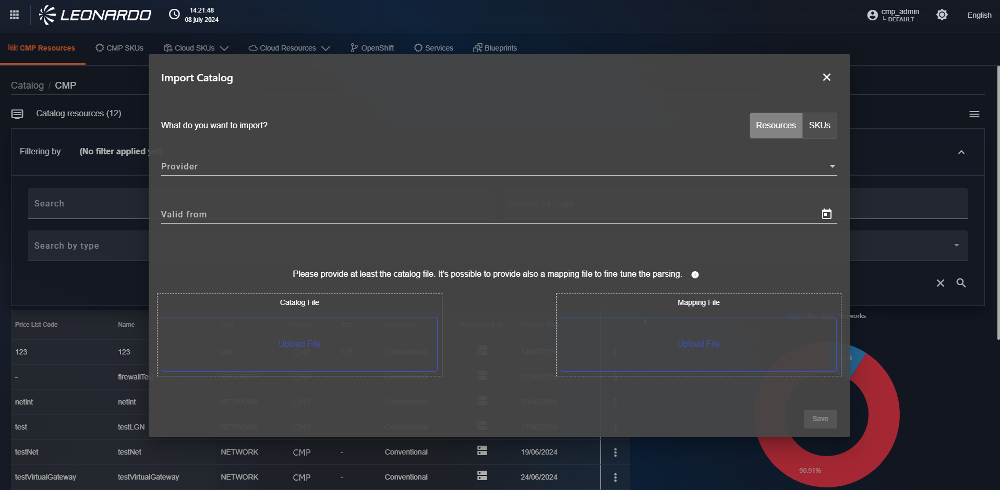
Figura -Campi obbligatori per l'importazione
Inoltre sotto i parametri sono presenti due sezioni per l’upload del
file, cliccando sul primo quadrato a sinistra sarà possibile selezionare
un file di tipo “XLS” che contiene tutte le risorse da mappare.
Cliccando sul secondo quadrato sarà possibile inserire un file di
mappatura, seguendo le informazioni mostrate nella sezione “Aiuto”
indicata con una icona “Punto di domanda”, cliccando su di essa verrà
aperto un box, sotto le sezioni per l’upload che contiene tutte le
informazioni relative al file di mapping da inserire (Figura 179)
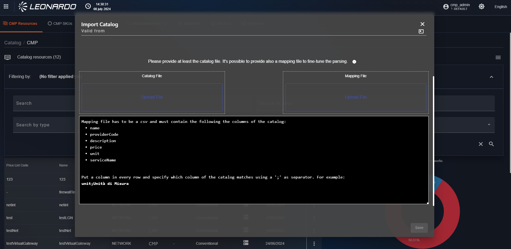
Figura - Messaggio di aiuto per il file di Mapping
Dopo aver inserito tutti i parametri sarà possibile cliccare il tasto salva in basso, e verremo riportati nella pagina di gestione dei cataloghi importati, dove sarà possibile monitorarne l’inserimento.
Gestione delle importazioni
Per inserire un nuovo listino è necessario cliccare l’ “hamburgher menu” disponibile in alto a destra nella pagina delle risorse di catalogo e selezionare la voce “Importdet Catalogues”(Figura 180)
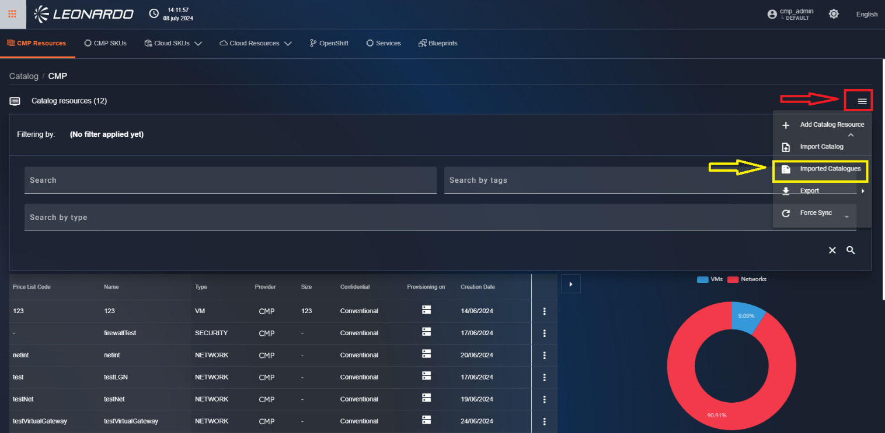
Figura - Accesso ai cataloghi importati
L’utente verrà quindi reindirizzato nella pagina contenente tutti i cataloghi importati precedentemente (Figura 181) all interno di questa pagina su ogni riga, che corrisponde ad un Upload , è possibile eliminare il file cliccando il pulsante “Tre punti” in corrispondenza della riga e cliccare la voce “Delete” per eliminarlo.
I cataloghi possono avere 3 stati differenti:
-
Deleted: indica che il file è stato sostituito con una versione successiva
-
Success: indicato con un icona di colore verde , indica che il catalogo è pronto e verrà utilizzato partendo dal giorno indicato
-
In progress: indicato con un icona di colore giallo, indica che il sistema sta effettuando i controlli sulla validità delle informazioni inserite
All’interno di questa pagina possiamo notare inoltre che gli upload effettuati con lo stesso file, vengono versionati, quindi all’ inserimento di un catalogo gia esistente esso verrà sovrascritto con una versione superiore e le versioni precedenti verranno disattivate.
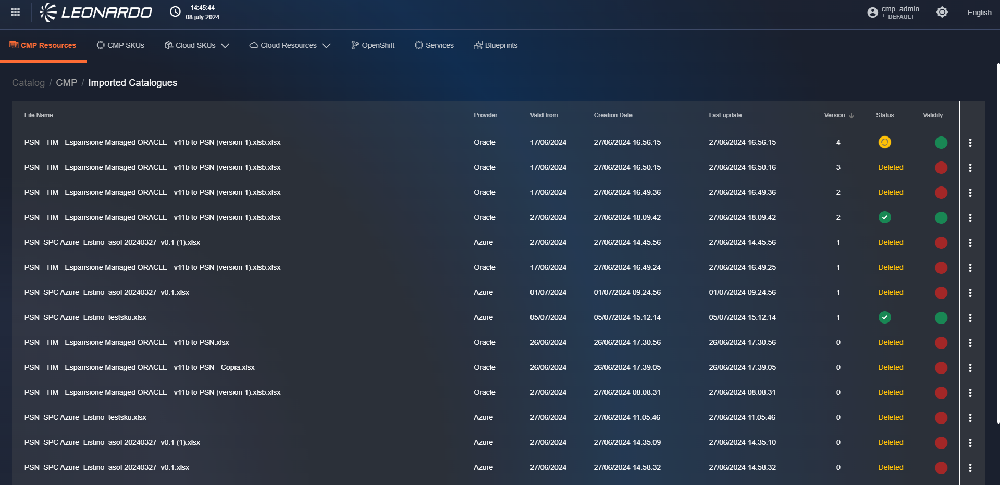
Figura - Lista dei cataloghi importati
Cliccando su una riga in stato “Success” della tabella verrà aperta una modale, all’ interno possiamo visualizzare uno specchietto riassuntivo che contiene, oltre alle informazioni di base, anche il numero di elementi , denominate “rows”, che sono state trovate nel file Excel.
Le righe disponibili nel file possono avere 3 stati differenti:
-
Associated Rows: indica che il sistema riesce sia a creare la risorsa che ad associarla ad una size di catalogo del provider, per permetterne poi l’utilizzo durante il provisioning
-
Success Rows: indica che il sistema riesce a creare la risorsa ma non riesce ad effettuare la relazione con una risorsa del provider
-
Failed Rows: indica che il sistema non può inserire la risorsa
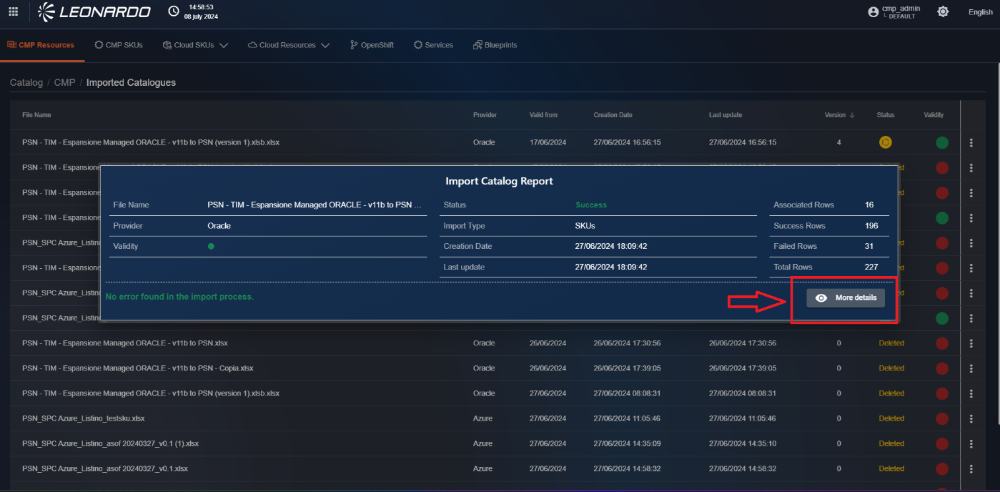
Figura - Dettagli dell' importazione
In basso possiamo cliccare il pulsante “More Details” per visualizzare il dettaglio delle righe del file Excel che sono state scartate dal sistema (Figura 183) , cliccando su una di esse possiamo visualizzare il numero della riga, il nome indicato nel file e l’errore che non ne ha permesso l’inserimento (Figura 184)
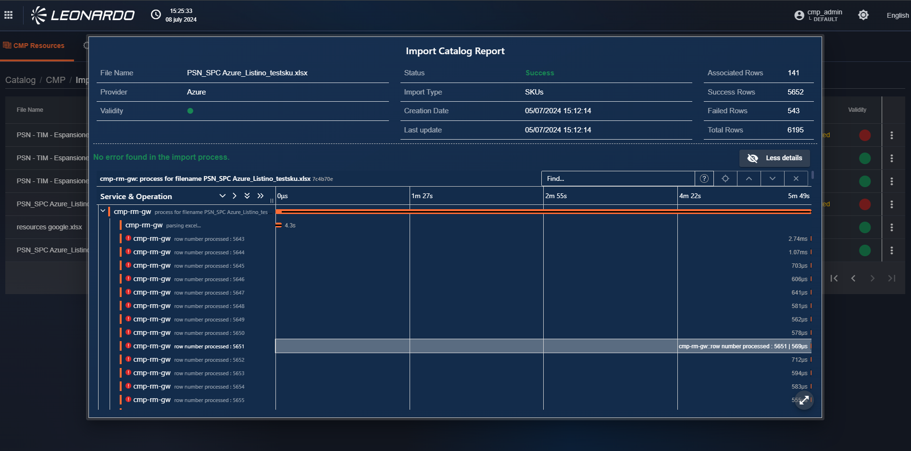
Figura - Dettagli delle righe dell' importazione
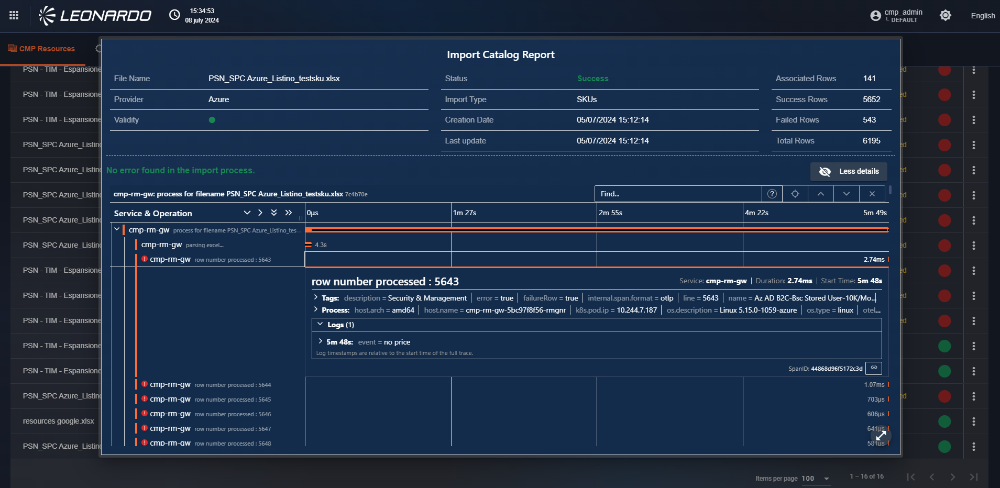
Figura - Dettaglio dell' errore
Gestione elementi di catalogo dei Provider
All’interno del Modulo Catalog è possibile visualizzare la lista ed i dettagli delle “size” disponibili sui vari provider configurati sulla SCMP sia per le singole risorse(VM,STORAGE,NETWORK,SECURITY) che per i gruppi di risorse “SKU”
Risorse
Per visualizzare la lista di risorse disponibili per un provider, selezionare in alto il menu “Cloud resources”(in rosso nell’ immagine) e selezionare uno dei provider disponibili (in giallo nell’ immagine), le funzionalità disponibili nelle pagine dei diversi provider sono identiche. (Figura 185)
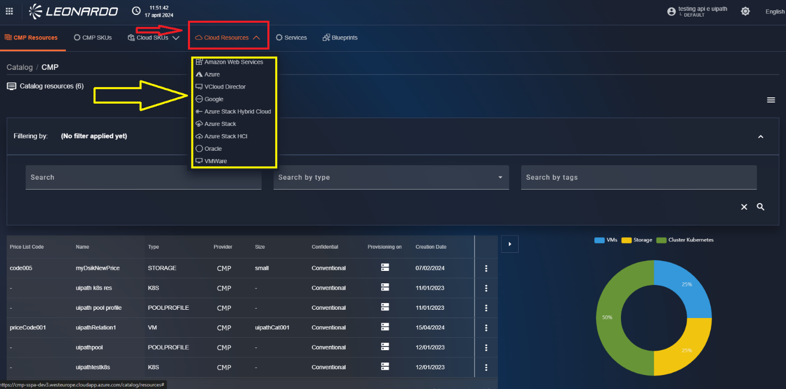
Figura - Risorse del catalogo dei providers
Export dei tagli del Provider
Per esportare l’elenco delle risorse del Catalogo visualizzate in pagina, in alto a destra cliccare sull'hamburger menu, e poi cliccare su “Export” (Figura 186).
L’operatore avrà la possibilità di esportare la lista dei risultati in formato .csv e/o .json.
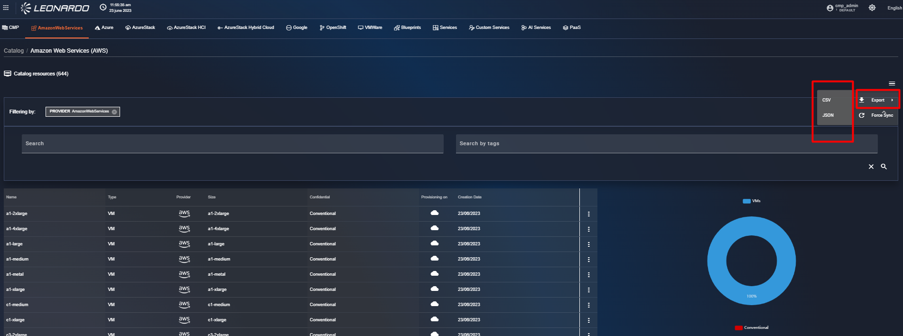
Figura 186 – Esportazione dei risultati
Funzionalità Aggiornamento Forzato del Catalogo
È possibile forzare il sistema affinché dopo qualche minuto, vengano aggiornate automaticamente tutte le “size” e i relativi costi associati, per farlo, cliccare in alto a destra sull'hamburger menu, e poi cliccare su “Force Sync” (Figura 187).
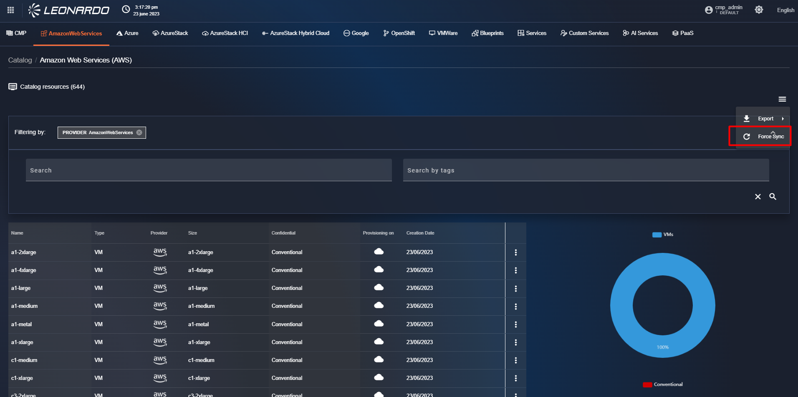
Figura 187 - Funzionalità Force Sync
Filtri delle risorse
Viene data la possibilità all’ utente di filtrare le liste di risorse visualizzate, in alto nella pagina è presente una sezione filtri (Figura 188) , i filtri disponibili sono:
-
“search” : permette di cercare le risorse con un testo libero
-
“search by type” : permette di cercare le risorse di una sola tipologia specifica
-
“search by tags” permette di cercare tutte le risorse che contengono un tag specifico
Dopo aver inserito uno o più filtri cliccare il pulsante “lente di ingrandimento” per effettuare la ricerca.
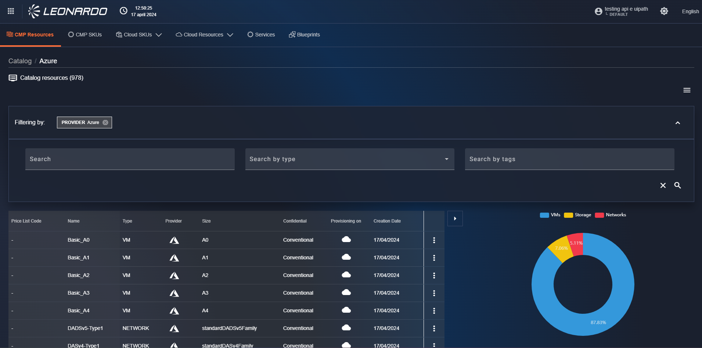
Figura - Filtri del Catalogo
Visualizzazione Riepilogo Risorsa
Per visualizzare l’anteprima di una risorsa in corrispondenza di una risorsa cliccare sul record di interesse, apparirà una modale che riporta le informazioni generali della risorsa individuata, tra cui : Sistema, Nome, Taglia , Data aggiornamento , RAM e CPU come presente nell’immagine seguente (Figura 189).
Figura 189 – Dettaglio rapido delle risorse di catalogo
Visualizzazione dei dettagli delle Risorse
Per visualizzare i dati di una risorsa, in corrispondenza di una risorsa cliccare sul kebab menu e poi cliccare su “Show” (Figura 190). Dopo aver fatto ciò, l’utente si ritrova all’interno della pagina della risorsa in modalità view, nel quale potrà visualizzare i dati ma non potrà modificarli (Figura 191).
Figura 190 - Accesso alla risorsa in modalità view
Figura 191 - Dettaglio Risorsa dal Modulo Catalog
Il dettaglio di una risorsa è suddiviso in varie sezioni:
- Details
- Properties
- Tags & Notes
- Cost
Nella sezione Cost è possibile selezionare in successione la Regione, la Zona e la tipologia di Costo per ottenere una preview dei costi relativi alla risorsa selezionata (Figura 192).
Figura 192 - Sezione costi della risorsa
In basso a destra, cliccare sul pulsante “Close” per tornare alla lista.
Risorse “On-Premise”
La gestione del catalogo risorse nei sistemi on-premise varia significativamente, risultando specifica per ogni sistema. In alcuni casi, la funzionalità di catalogo è assente, mentre in altri è disponibile ma non consente il recupero automatico delle risorse.
Viene data la possibilità all’ utente di definire un catalogo “Cloud” personalizzato direttamente nella SCMP, in questo modo successivamente sarà possibile aggiungere nelle relazioni delle risorse di “Catalogo SCMP” le risorse create.
Per farlo è necessario prima accedere al tab delle risorse di catalogo di un provider on-premise , nello specifico prendiamo come esempio “VMWare” selezionando la voce “VMWare” nel menù “Cloud resources" del modulo di catalogo (Figura 193)
Figura - Accesso al catalogo On-premise
All’ interno della pagina, in alto sulla destra sopra la barra dei filtri, troviamo un menu contestuale, cliccare sull’ icona “Tre linee” e selezionare “Add catalog resource” (Figura 194) in questo modo verremo reindirizzati alla pagina , specifica per provider, di creazione della risorsa di catalogo.
Figura - Creazione nuova risorsa
A questo punto, l’utente si ritrova all’interno della pagina in cui è possibile selezionare il tipo di risorsa da creare (Figura 195).
Figura 195 - Selezione del tipo di risorsa da creare
Dal menu a tendina, selezionare il tipo di risorsa da creare. Dopodiché, cliccare sul pulsante “Next”. Ci si ritrova all’interno della pagina di compilazione della risorsa (Figura 196).
Figura 196 – Esempio di form per la creazione di una risorsa
All’ interno di questa pagina , dopo aver aperto le sezioni disponibili, inserire tutti i parametri necessari, nella sezione “Cost” in basso (Figura 197), sarà possibile aggiungere un prezzo personalizzato da associare alla risorsa. Per farlo bisogna selezionare l’ intervallo di fatturazione (orario, giornaliero, settimanale, mensile) e inserire a destra il costo relativo al periodo selezionato.
Figura - Sezione costi delle risorse
Cloud SKU
Per visualizzare la lista degli sku disponibili per un provider, selezionare in alto il menu “Cloud SKU”(in rosso nell’ immagine) e selezionare uno dei provider disponibili (in giallo nell’ immagine), le funzionalità disponibili nelle pagine dei diversi provider sono identiche. (Figura 185)
Figura - Risorse del catalogo dei providers
Export dei tagli del Provider
Per esportare l’elenco delle risorse del Catalogo visualizzate in pagina, in alto a destra cliccare sull'hamburger menu, e poi cliccare su “Export” (Figura 199).
L’operatore avrà la possibilità di esportare la lista dei risultati in formato .csv e/o .json.
Figura 199 – Esportazione dei risultati
Funzionalità Aggiornamento Forzato del Catalogo
È possibile forzare il sistema affinché dopo qualche minuto, vengano aggiornate automaticamente tutte le “size” e i relativi costi associati, per farlo, cliccare in alto a destra sull'hamburger menu, e poi cliccare su “Force Sync” (Figura 200).
Figura 200 - Funzionalità Force Sync
Filtri delle risorse
Viene data la possibilità all’ utente di filtrare le liste di risorse visualizzate, in alto nella pagina è presente una sezione filtri (Figura 201) , i filtri disponibili sono:
-
“search” : permette di cercare le risorse con un testo libero
-
“search by Service name” : permette di cercare le risorse relative ad una sola tipologia di servizio
-
“search by tags” permette di cercare tutte le risorse che contengono un tag specifico Dopo aver inserito uno o più filtri cliccare il pulsante “lente di ingrandimento” per effettuare la ricerca.
Figura - Filtri del Catalogo
Visualizzazione Riepilogo Risorsa
Per visualizzare l’anteprima di una risorsa in corrispondenza di una risorsa cliccare sul record di interesse, apparirà una modale che riporta le informazioni generali della risorsa individuata, tra cui : Sistema, Nome, Taglia , Data aggiornamento , nome del servizio (Figura 202).
Figura 202 – Dettaglio rapido delle risorse di catalogo
Visualizzazione dei dettagli delle Risorse
Per visualizzare i dati di una risorsa, in corrispondenza di una risorsa cliccare sul kebab menu e poi cliccare su “Show” (Figura 190). Dopo aver fatto ciò, l’utente si ritrova all’interno della pagina della risorsa in modalità view, nel quale potrà visualizzare i dati ma non potrà modificarli (Figura 191).
Figura 203 - Accesso alla risorsa in modalità view
.
Figura 204 - Dettaglio Risorsa dal Modulo Catalog
Il dettaglio di una risorsa è suddiviso in varie sezioni:
- Details
- Properties
- Tags & Notes
- Cost
Nella sezione Cost è possibile selezionare in successione la Regione, la Zona e la tipologia di Costo per ottenere una preview dei costi relativi alla risorsa selezionata (Figura 192).
Figura 205 - Sezione costi della risorsa
In basso a destra, cliccare sul pulsante “Close” per tornare alla lista.
Gestione elementi “Servizi e Blueprint”
Servizi
Per accedere alla funzionalità dei “Services”, in alto a sinistra cliccare sul pulsante bento e poi cliccare su “Catalog” (Figura 206).
Figura 206 - Accesso ai "Services"
Dalla pagina “SCMP”, cliccare sul tab che raffigura tre quadrati uniti ‘Services’, posizionato sopra il path del breadcrumb. Fatto ciò, ci si ritrova all’ interno della pagina ‘Services’, viene visualizzata una lista di componenti denominati “Card”. ()
Ogni card fa riferimento ad un tipo di servizio specifico, essendo molti i servizi presenti il sistema ne esegue una paginazione, in basso possiamo utilizzare il campo “Item for page” per visualizzare più risultati oppure utilizzare le frecce per navigare tra le liste di servizi.
Figura - Pagina dei servizi
Filtri della pagina “Services”
Per facilitare l’utente nella ricerca di un servizio specifico è stata inserita nella pagina una sezione filtri laterale(), all’ interno possiamo trovare tre filtri combinabili:
-
“Filter by Text”: inserendo un testo in questo campo la lista di servizi verrà aggiornata per mostrare i servizi che riportano nel titolo o nella descrizione il testo inserito.(di colore arancione nell’ immagine)
-
“Categories” : è possibile filtrare la lista per una o più categorie di servizi, la categoria viene inserita manualmente in fase di creazione del servizo (in verde nell’ immagine)
-
“Tags”: è possibile selezionare uno o più tag per visualizzare solo i servizi che sono stati configurati con il tag (in rosso nell’ immagine)
Utilizzando i filtri in combinazione tra loro, sarà possibile visualizzare i soli servizi che soddisfano tutte le condizioni specificate. In altre parole, la query restituirà solo i servizi che coincidono con tutti i criteri impostati.
Figura - Filtri disponibili
Creazione Services
Dalla pagina “Services”, è possibile per l’utente poter creare un Service, accedendo nell’apposita sezione come mostrato in figura (Figura 209).
Figura 209 - Accesso al form di creazione del Service
All’interno della pagina di creazione è necessario selezionare una tipologia di servizio utilizzando il campo "Service Type” per visualizzarne i parametri obbligatori (Figura 210)
Figura - Selezione della tipologia di servizio
Nei prossimi paragrafi analizzeremo nel dettaglio le singole tipologie di servizi.
Servizi “Standard”
La prima tipologia di servizi disponibile per la SCMP sono i servizi “Standard”, questi servizi sono nativamente integrati nel sistema e il loro funzionamento non può essere modificato dall’ utente.
Lista dei servizi offerti:
-
CosmosDb Cassanddra SQL
-
CosmosDb Core SQL
-
CosmosDb Mongo
-
Kafka 3.2.1 on Ubuntu 20.04 LTS
-
Kafka 3.2.1 on Ubuntu 22.04 LTS
-
Mongo DB 5.0 on Ubuntu 20.04 LTS
-
Mongo DB 6.0 on Ubuntu 20.04 LTS
-
Mongo DB 6.0 on Ubuntu 22.04 LTS
-
MySQL DB 8.0 on Ubuntu 20.04 LTS
-
MySQL DB 8.0 on Ubuntu 22.04 LTS
-
PostgreSQL 14 on Ubuntu 20.04 LTS
-
PostgreSQL 14 on Ubuntu 22.04 LTS
-
Redis DB 7.0 on Ubuntu 20.04 LTS
-
Redis DB 7.0 on Ubuntu 22.04 LTS
Per inserire un nuovo servizio è necessario compilare tutti i campi della sezione properties (Figura 211)
Nello specifico:
-
“Categories”: inserire un testo libero nel campo e selezionare dalla dropdown una categoria già configurata oppure è possibile aggiungere una nuova categoria cliccando il pulsante “+” nella dropdown (in arancione nella pagina)
-
“Name”: il nome del servizio che sarà visualizzato nella card corrispondente
-
“Description”: la descrizione del servizio che verrà mostrata nella card relativa
-
“Upload File”: cliccando questo controllo sarà possibile selezionare dal proprio PC un file di tipo “immagine” che verrà visualizzato nella card del servizio.
-
“Related Software”: in questa sezione è possibile selezionare uno o più software “Standard” che verranno poi utilizzati in fase di provisioning.
Figura - Aggiunta nuova categoria
Una volta inseriti tutti i dati è possibile salvare il servizio utilizzando il pulsante “save” in basso a destra, verrà visualizzata una modale di conferma e l’utente viene reindirizzato nella lista dei servizi disponibili.
Servizi “Custom”
Viene data la possibilità all’ utente di definire dei servizi “Custom” tramite inserimento di un file zip con all’ interno tutti file necessari per l’esecuzione.
In questo caso specifico il sistema SCMP viene utilizzato solo per salvare il servizio e lanciarne l’esecuzione, non è quindi possibile effettuare un controllo sulla correttezza del processo, che dovrà essere gestito dall’ utente.
sono tutti orchestratori, ma con funzionalità e scopi differenti:
1. Ansible:
-
Orchestrazione di server e applicazioni: Ansible automatizza la configurazione e la gestione di server e applicazioni su diverse piattaforme.
-
Esegue playbook YAML: Ansible utilizza playbook YAML per definire le istruzioni da eseguire sui server.
-
Non richiede agent: Ansible è agentless, non richiede l'installazione di software sui server da gestire.
2. Bicep:
-
Linguaggio DSL per Azure: Bicep è un DSL specifico per Azure che facilita la definizione di infrastruttura come codice.
-
Crea modelli ARM: Bicep traduce i file in modelli ARM (Azure Resource Manager) che Azure utilizza per creare le risorse.
-
Si integra con Azure DevOps: Bicep si integra con Azure DevOps per la gestione del ciclo di vita.
3. Kubernetes:
-
Orchestrazione di container: Kubernetes è la piattaforma leader per l'orchestrazione di container su larga scala.
-
Automatizza la distribuzione e la gestione: Kubernetes automatizza la distribuzione, il ridimensionamento e la gestione di container in cluster.
-
Offre un ecosistema di strumenti: Kubernetes offre un ricco ecosistema di strumenti e librerie per la gestione dei container.
4. Terraform:
-
Infrastructure as Code: Terraform è un tool open source per la gestione dell'infrastruttura come codice.
-
Definisce l'infrastruttura in file HCL: Terraform utilizza file di configurazione HCL per definire l'infrastruttura desiderata.
-
Supporta diversi provider: Terraform supporta un'ampia gamma di provider cloud e on-premise.
In sintesi:
-
Ansible: Ideale per automatizzare la configurazione di server e applicazioni.
-
Bicep: Ottimo per definire l'infrastruttura su Azure in modo leggibile.
-
Kubernetes: Potente strumento per l'orchestrazione di container su larga scala.
-
Terraform: Flessibile per gestire l'infrastruttura su più cloud provider o on-premise
Nella configurazione dei servizi “Custom” possiamo individuare una sezione comune composta dai parametri iniziali (Figura 212) :
-
“Categories”: inserire un testo libero nel campo e selezionare dalla dropdown una categoria già configurata oppure è possibile aggiungere una nuova categoria cliccando il pulsante “+” nella dropdown
-
“Name”: il nome del servizio che sarà visualizzato nella card corrispondente
-
“Description”: la descrizione del servizio che verrà mostrata nella card relativa
Figura Parametri generali dei "Custom Services"
Successivamente è necessario scegliere la tipologia di “orchestratore” da utilizzare (Figura 213) e inserire il file “.zip” corrispondente nella sezione “Upload File”, di seguito vengono indicate le specifiche per ogni tipologia:
| Tipologia script | Contenuto obbligatorio del file .zip |
|---|---|
| Ansible | Instance.yaml - Vars.yaml |
| Bicep | Main.bicep - Main.parameters.json |
| Kubernetes | Solo files di tipo .YAML |
| Terraform | Main.tf - Variable.tf - Provider.tf |
Oltre ai files descritti nella tabella è possibile aggiungere nello zip un file di tipo “.png / .jpg / .img” che verrà poi utilizzato come immagine della Card corrispondente
Figura - Selezione della tipologia di Orchestratore
Una volta inseriti tutti i dati è possibile salvare il servizio utilizzando il pulsante “save” in basso a destra, verrà visualizzata una modale di conferma e l’utente viene reindirizzato nella lista dei servizi disponibili
Servizi “azure pipeline”
Viene data la possibilità all’ utente di definire dei servizi “Azure Pipeline” Questa tipologia di servizio permette alla SCMP di invocare l’esecuzione di una pipeline remota DEVOPS e successivamente potrà esssere richiamata dalla funzionalità di “Provisioning”.
Nella configurazione dei servizi “Azure Pipeline” possiamo individuare una sezione generale composta dai parametri (Figura 214) :
-
“Categories”: inserire un testo libero nel campo e selezionare dalla dropdown una categoria già configurata oppure è possibile aggiungere una nuova categoria cliccando il pulsante “+” nella dropdown
-
“Name”: il nome del servizio che sarà visualizzato nella card corrispondente
-
“Description”: la descrizione del servizio che verrà mostrata nella card relativa
Figura Parametri generali "Azure pipeline service"
Anche per questo servizio sarà possibile, tramite il campo “upload File” , inserire un file di tipo “.zip” che contenga nello zip un file di tipo “.png / .jpg / .img” che verrà poi utilizzato come immagine della Card corrispondente.
Successivamente sarà necessario compilare i parametri specifici del servizio(Figura 215), in particolare bisognera inserire:
-
“Organizzazione” : il nome dell’ organizzazione DevOps dove risiede la pipeline
-
“Project”: il nome del progetto DevOps dove risiede la pipeline
-
“PAT”: il personal access token privato generato dal portale “Azure DevOps” Una volta compilati questi campi è possibile cliccare il pulsante “Test” per verificare i parametri inseriti.(Figura 215)
Se i dati inseriti non sono validi verranno visualizzati diversi messaggi di errore che indicano quale parametro è errato (ad esempio: “Specified Organization is not valid.”) e il pulsante diventa rosso con scritto “KO”, quando tutti i parametri sono corretti il pulsante diventa di colore Verde con scritto “OK”.
Figura - Parametri specifici delle Pipeline
Dopo aver effettuato il test correttamente sarà possibile selezionare la pipeline da eseguire utilizzando il campo “Select Pipeline” e cliccando su una opzione disponibile(Figura 216)
Figura - Selezione della pipeline
Una volta inseriti tutti i dati è possibile salvare il servizio utilizzando il pulsante “save” in basso a destra, verrà visualizzata una modale di conferma e l’utente viene reindirizzato nella lista dei servizi disponibili
Servizi “PaaS”
Possiamo configurare all’ interno della SCMP anche dei servizi di tipo “PaaS”, per la configurazione di questi servizi è necessario inserire questi parametri (Figura 217) :
-
“Categories”: inserire un testo libero nel campo e selezionare dalla dropdown una categoria già configurata oppure è possibile aggiungere una nuova categoria cliccando il pulsante “+” nella dropdown
-
“Name”: il nome del servizio che sarà visualizzato nella card corrispondente
-
“Description”: la descrizione del servizio che verrà mostrata nella card relativa
-
“Company” : il nome della società che ha rilasciato il servizio
-
“Publisher”: il nome del pubblicatore del servizio
Figura Parametri generali dei "PaaS Services"
Successivamente è necessario inserire un file “.zip” che contenga solo file di tipo “.json” e un file di tipo “.png / .jpg / .img” che verrà poi utilizzato come immagine della Card corrispondente
Una volta inseriti tutti i dati è possibile salvare il servizio utilizzando il pulsante “save” in basso a destra, verrà visualizzata una modale di conferma e l’utente viene reindirizzato nella lista dei servizi disponibili
Servizi “AI”
Infine, è possibile configurare all’ interno della SCMP, dei servizi di tipo “AI Services”, per farlo è necessario compilare i seguenti campi (Figura 218) :
-
“Categories”: inserire un testo libero nel campo e selezionare dalla dropdown una categoria già configurata oppure è possibile aggiungere una nuova categoria cliccando il pulsante “+” nella dropdown
-
“Name”: il nome del servizio che sarà visualizzato nella card corrispondente
-
“Description”: la descrizione del servizio che verrà mostrata nella card relativa
-
“Algorithm”: nome dell’ algoritmo utilizzato dalla AI
-
“Company” : il nome della società che ha rilasciato il servizio
-
“Publisher”: il nome del pubblicatore del servizio
-
“Platform”: piattaforma sulla quale è stata rilasciata l’ api
-
“Machine Learning Task”:
-
“Swagger”: inserire il link allo swagger che contiene tutte le API del servizio
-
“resource Link”: il link diretto alla risorsa
Figura - Parametri dei "Servizi AI"
Se necessario è possibile inserire una sezione di informazioni relative alle propietà del docker che ospita l’ AI, per sbloccare il pannello è necessario cliccare sulla sezione “Click here to add” , a questo punto la pagina si aggiorna per mostrare i parametri(Figura 219)
Figura - Sblocco della sezione "Docker"
All’ interno di questa sezione inserire tutti i parametri visualizzati (Figura 220) e salvare il servizio utilizzando il pulsante “save” in basso a destra, verrà visualizzata una modale di conferma e l’utente viene reindirizzato nella lista dei servizi disponibili
Figura - Parametri della sezione docker
Modifica ed Eliminazione Services
Oltre alla creazione di un Service, è possibile effettuare la visualizzazione, modifica ed eliminazione del suddetto(Figura 221).
-
Per modificare le informazioni di un “Service”, cliccare sul pulsante “Edit” all’interno della card. Dopodiché, all’interno del form, l’utente può modificare i dati necessari. Dopo aver effettuato le operazioni di edit, in basso a destra, cliccare sul pulsante “Submit”. Dopo aver fatto ciò, l’utente si ritrova all’interno della pagina “Service”. (Figura 222)
-
Per eliminare un “Service”, cliccare sul kebab menu di un suddetto e poi cliccare su “Delete”. Fatto ciò, appare una modale di conferma di eliminazione del Service. A questo punto, è necessario cliccare sul pulsante “Remove”. (Figura 223)
Figura 221 - Operazioni disponibili per i Services
Figura – Pagina di edit per un servizio
Figura - Eliminazione di un servizio
Gestione Blueprints
Per accedere alla funzionalità dei “Services”, in alto a sinistra cliccare sul pulsante bento e poi cliccare su “Catalog” (Figura 224).
Figura 224 - Accesso alle "Blueprint"
Dalla pagina “SCMP”, cliccare sul tab che raffigura tre quadrati uniti ‘Blueprint’, posizionato sopra il path del breadcrumb. Fatto ciò, ci si ritrova all’ interno della pagina ‘Blueprint’, viene visualizzata la lista delle blueprint configurate nel sistema. (Figura 225)
Figura - Pagina delle Blueprint
Aggiunta nuova blueprint
Dalla pagina “Blueprint”, è possibile per l’utente poter creare una nuova blueprint, accedendo nell’apposita sezione come mostrato in figura (Figura 226), cliccando l’ “hamburgher menu” presente in alto a destra e selezionando come opzione “Add Blueprint”
Figura - Aggiunta nuova Blueprint
L’utente viene reindirizzato nello step 1 della creazione di una “Blueprint” dove è possibile inserire tutte le informazioni generali della blueprint.(Figura 227). Dopo aver inserito i dati cliccare il pulsante “Save blueprint” per salvare la bozza della blueprint , per i dettagli sullo status è possibile consultare il paragrafo successivo (5.9.3.2.2)
Figura - Blueprint step 1
Viene aperta una modale di conferma inserimento, (Figura 228) una volta cliccato “yes” per continuare l’utente visualizzerà lo stato 2 della creazione di una blueprint.
Cliccando “No” verrà annullato l’inserimento della bozza.
Figura - Blueprint conferma della bozza
Nello step 2 della creazione di una Blueprint è necessario cliccare all’ interno del campo “Upload File” e utilizzando la finestra di upload windows selezionare il file “.CSAR” che contiene la Blueprint. (Figura 229)
Dopo aver selezionato una file cliccare sul pulsante ”Upload” in basso a destra per lanciare il processo di validazione del file, seguendo la lista di stati presente nel paragrafo (5.9.3.2.2)
(ESTRATTO DI COME SI CREA UNA BLUEPRINT?)
Figura - Inserimento file
Status delle Blueprint
Essendo le “Blueprint” degli oggetti complessi, che devono essere opportunamente configurati, è stato inserito un sistema di validazione dei files inviati per permettere l’utilizzo dei soli servizi “Blueprint” configurati correttamente. (Figura 230)
Nello specifico esistono 4 possibili “STATUS”:
-
READY TO USE (spunta di colore verde): indica che la blueprint è configurata correttamente e sarà possibile utilizzarla durante il “Provisioning”
-
VERIFY (cerchio di colore giallo) indica che la SCMP sta validando il contenuto della Blueprint
-
FAILED (“X” di colore rosso): indica che il file inviato non è valido e dovrà essere reinserito dall’utente dopo averlo corretto.
-
DRAFT (di colore arancione) indica che la “blueprint” è stata creata come bozza ma non contiene all’ interno il file CSAR necessario, una volta inserito il file la blueprint passerà allo status VERIFY
Figura - Status delle Blueprint
Visualizzazione, Modifica ed Eliminazione delle Blueprint
Nella tabella delle blueprint disponibili in corrispondenza di ogni riga, sulla destra è presente un menu contestuale, una volta aperto all’ interno troviamo tre funzionalità:
la funzionalità “View”: permette di visualizzare i dettagli della blueprint, una volta cliccato l’utente verrà reindirizzato nella pagina di visualizzazione della blueprint (Figura 231) che contiene le sezioni :
-
Properties: in questa sezione sono disponibili le informazioni base della blueprint (Figura 231)
-
Provisioning plan: in questa sezione è presente il grafico BPNM che ci fornisce una rappresentazione grafica degli “step” previsti dalla “Blueprint” (Figura 232) utilizzando il pulsante in alto a sinistra “Download” è possibile scaricare il file BPNM visualizzato.
-
Topology : La topologia di una blueprint è la disposizione dei componenti in un cluster Kubernetes. ,in questa sezione possiamo visualizzare graficamente la struttura del sistema tra i diversi pod, servizi e componenti. (Figura 233)
Figura - Sezioni della pagina Blueprint "view"
Figura - Sezione Plan di una Blueprint
Figura -Sezione Topology di una Blueprint
La funzionalità “Edit”: permette di modificare tutti i parametri della blueprint, compreso il file CSAR relativo(Figura 234),contiene le seguenti sezioni :
-
Properties: in questa sezione è possibile modificare le informazioni base della blueprint (Figura 234)
-
Provisioning plan: in questa sezione è presente il grafico BPNM che ci fornisce una rappresentazione grafica degli “step” previsti dalla “Blueprint” (Figura 235) in questa sezione sono presenti tre pulsanti per modificare il plan, il primo a forma di “cartella” permette l’upload sulla pagina di edit di un nuovo file BPMN , il secondo “download” permette di scaricare l’attuale file BPNM visualizzato , il terzo sulla destra “Upload” effettua la sovrascrizione dell’ attuale file BPNM disponibile per la blueprint
-
Topology : La topologia di una blueprint è la disposizione dei componenti in un cluster Kubernetes. ,in questa sezione possiamo visualizzare graficamente la struttura del sistema tra i diversi pod, servizi e componenti. (Figura 236)
-
Update Model: in questa sezione è possibile eseguire l’upload del file CSAR , effettuando questa modifica la Blueprint tornerà nello stato di “VERIFY” per validarne il contenuto (Figura 237)
Figura - Sezioni della pagina Blueprint "edit"
Figura - Sezione Plan di una Blueprint
Figura -Sezione Topology di una Blueprint
Figura - Sezione Model di una Blueprint
La funzionalità “Delete”: permette di eliminare definitivamentela blueprint dal sistema, per farlo basta confermare l’eleiminazione cliccando il tasto “Yes” visualizzato nella modale di conferma eliminazione(Figura 238)
Figura - Eliminazione di una Blueprint